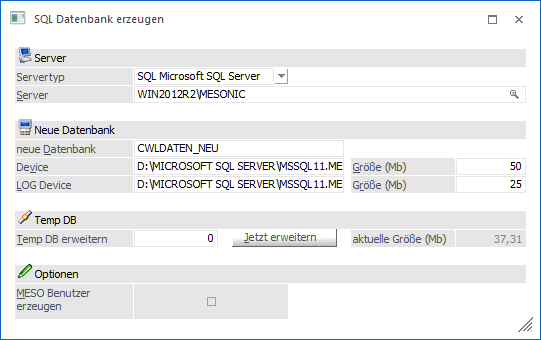
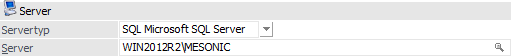
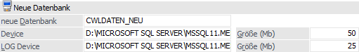
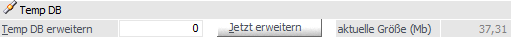
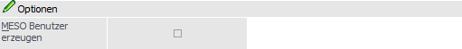

Über den Menüpunkt
1 WinLine ADMIN
1 System
1 SQL Datenbank erzeugen
besteht die Möglichkeit eine Datenbank am SQL-Server anzulegen, ohne dafür in das SQL Server Management Studio gehen zu müssen.

Server

Ø Servertyp
Aus der Auswahlliste muss der Typ des SQL-Servers gewählt werden, auf welchem eine neue Datenbank angelegt werden soll. Dabei stehen die folgenden Optionen zur Verfügung:
ü SQL - Microsoft SQL Server
Es
wird eine neue Datenbank für einen Microsoft SQL Server angelegt.
ü POS - PostgreSQL
Die Funktion
wird aktuell nicht unterstützt.
Ø Server
Hier muss der Name des Computers eingegeben werden, auf dem der SQL-Server installiert ist (hier "WIN2012R2"). Sollte am SQL-Server mit Instanzen gearbeitet werden, so ist auch die Angabe der Instanz notwendig (hier "MESONIC").
Durch Drücken der F9-Taste kann nach allen im Netzwerk vorhandenen SQL-Servern gesucht werden. Nach Bestätigung des Namens muss der Benutzername und das Kennwort für den SQL-Server eingegeben werden. Erst dann kann mit den weiteren Eingaben fortgesetzt werden.
Hinweis
Sollte per F9-Taste der gewünschte SQL-Server nicht angeboten werden, so könnte eine Ursache sein, dass der sogenannte "SQL Server-Browser-Dienst" nicht installiert oder aktiviert wurde. In solch einem Fall müsste der Server manuell erfasste werden.
Neue Datenbank

Ø neue Datenbank
Hier wird der Name der Datenbank eingetragen, welche erzeugt werden soll, wobei die Länge des Namens nicht beschränkt ist. Abhängig von dieser Eingabe werden die nächsten beiden Felder ("Device" und "LOG Device") ausgefüllt.
Achtung
Datenbanknamen dürfen nicht mit einer Zahl beginnen oder die Zeichen "(-,.[])" enthalten (die Liste der Zeichen ist abhängig vom Windows Betriebssystem und dem verwendeten SQL-Server). Ist das der Fall, wird eine entsprechende Meldung ausgegeben und es muss ein neuer Name eingetragen werden.
Ø Device / LOG Device
Hier werden die Dateien angezeigt, welche durch die Erstellung der Datenbank angelegt werden. Hierbei wird bei einem Microsoft SQL-Server für das Device die Dateierweiterung MDF, für das LOG-Device die Erweiterung LDF verwendet. Als Verzeichnis wird jenes Verzeichnis vorgeschlagen, in welches bereits Datenbanken angelegt wurden. Dieser Vorschlag kann geändert werden.
Beispiel
Wenn eine Datenbank "CWLDATEN" angelegt werden soll, wird als Device "C:\SQLDATEN\CWLDATEN_DATA.MDF", als LOG-Device wird "C:\SQLDATEN\CWLDATEN_LOG.LDF" vorgeschlagen.
Ø Größe (Mb)
Eingabe der Größe der Datenbank bzw. des Logs. Die vorgeschlagene Größe von 50 bzw. 25 MB kann beliebig verändert werden.
Hinweis
Das LOG-Device sollte zumindest die Hälfte der Größe des Daten-Devices betragen.
Beispiel
Das Daten-Device wurde mit 200 Mb definiert. Das LOG-Device sollte daher mindestens 100 Mb groß sein.
Temp DB

Ø Temp DB erweitern / aktuelle Größe (Mb)
Hier kann die Anzahl der Mb eingegeben werden, um welche die Temp DB vergrößert werden soll. Voraussetzung dafür ist, dass im Master-Device genügend Platz vorhanden ist. Das Informationsfeld "aktuelle Größe" zeigt an, wie groß die Temp DB zurzeit ist. Der Wert "aktuelle Größe" sollte mindestens 25 Mm aufweisen (bzw. sollte beim SQL-Server die Option "automatisch vergrößern" aktiviert sein).
Ø Jetzt erweitern
Durch Anklicken des Buttons "Jetzt erweitern" wird die Größe der Temp DB geändert. Wird dieser Button nicht angeklickt, wird die Temp DB im Zuge der Erstellung der Datenbank vergrößert.
Optionen

Ø MESO Benutzer erzeugen
Ist diese Checkbox aktiviert, wird ein Login "meso" am SQL-Server angelegt. Dabei werden die benötigten Rollen vergeben, damit der Benutzer "meso" alle notwendigen Aktionen durchführen kann. Ist am SQL-Server der Benutzer "meso" bereits vorhanden, dann die Option auch nicht angewählt werden.
Buttons

Ø Ok
Durch Anklicken des Buttons "Ok" bzw. der Taste F5 wird die angegebene Datenbank erstellt. Zusätzlich wird auch der Benutzer "meso" angelegt, sofern diese Option gesetzt wurde.
Achtung
Der Benutzer "meso" ist am SQL-Server unbedingt erforderlich. Ist dieser nicht vorhanden, dann kann nicht auf die Datenbanken zugegriffen werden!
Ø Ende
Durch Drücken des Buttons "Ende" bzw. der Taste ESC wird das Fenster geschlossen.